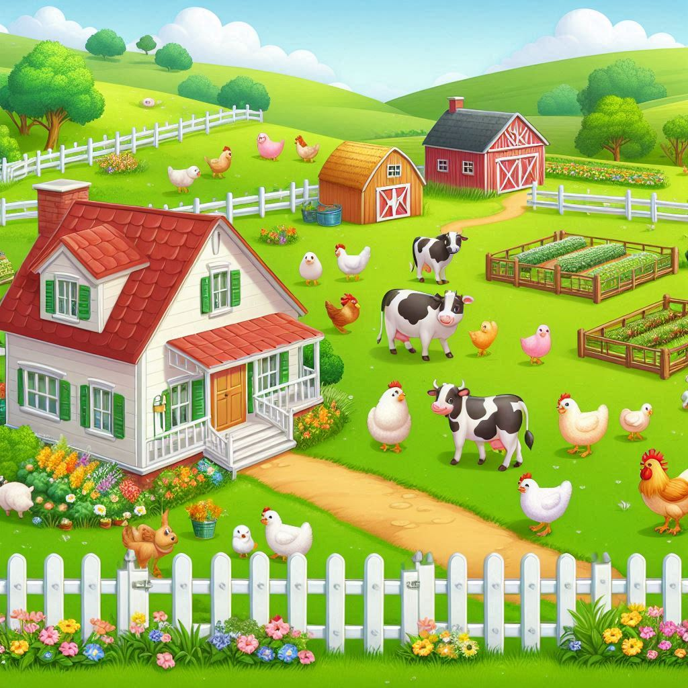
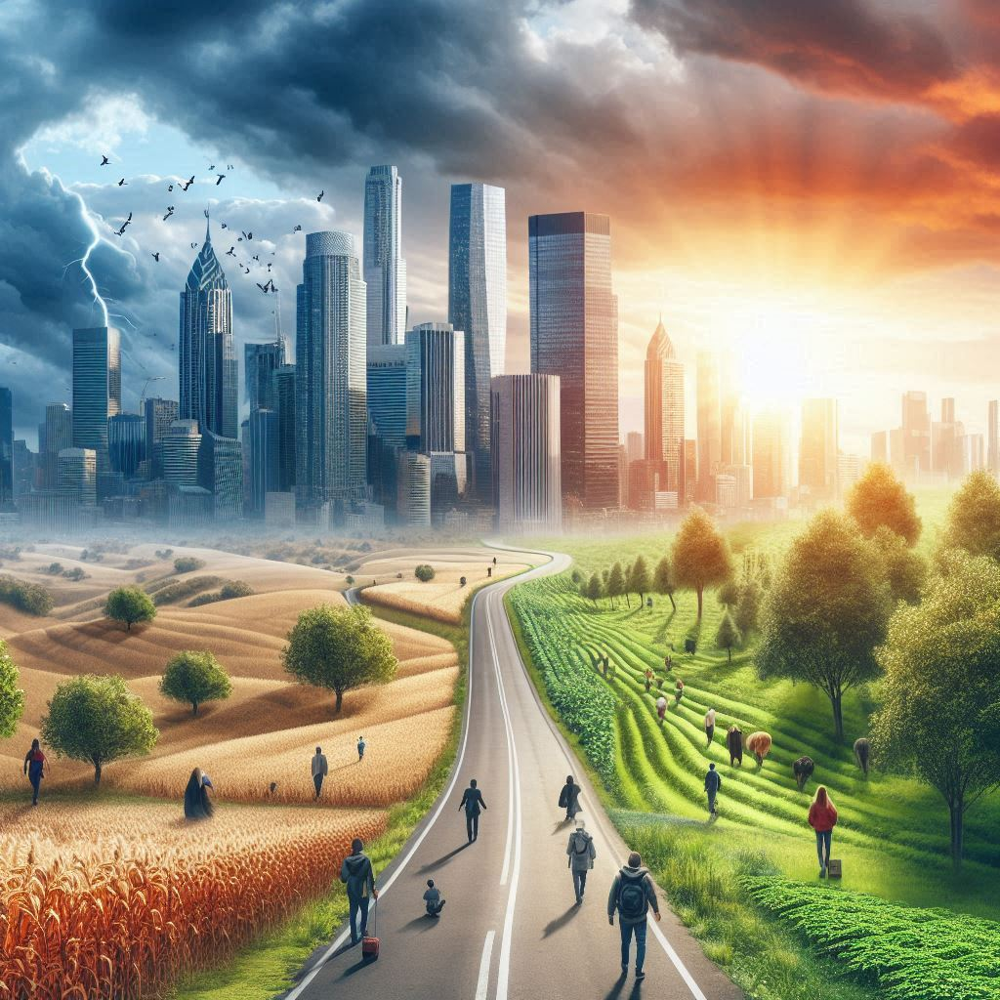
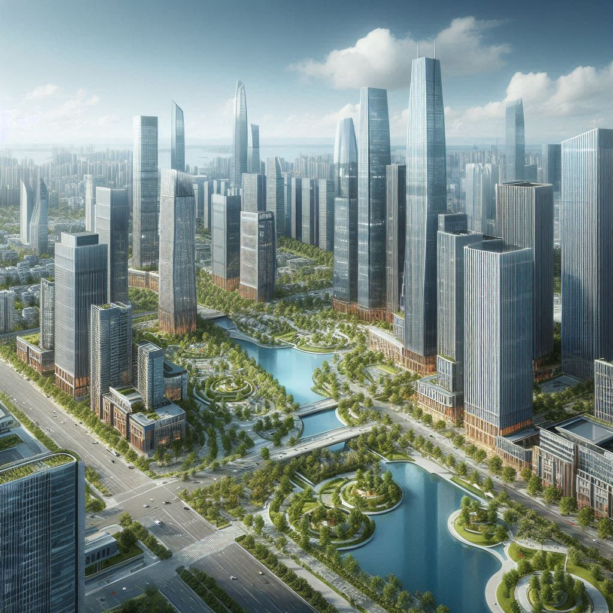

Uma Jornada de Transformação
Descubra como a transição do campo para a cidade pode abrir novas oportunidades e desafios.
A Jornada

Vida no Campo
A tranquilidade e a simplicidade da vida rural, onde tudo é mais próximo da natureza e da comunidade.

Transição
Os desafios e as adaptações necessárias para a mudança, incluindo aspectos culturais, sociais e econômicos.

Vida na Cidade
As novas oportunidades e o dinamismo da vida urbana, oferecendo acesso a educação, emprego e inovação.
Oportunidades
A cidade oferece uma variedade de oportunidades que podem transformar vidas, desde educação de qualidade até novas carreiras.
- Educação: Acesso a escolas, universidades e cursos profissionalizantes.
- Emprego: Diversas opções de trabalho e crescimento profissional.
- Lazer e Cultura: Museus, teatros, cinemas e eventos culturais.
Contato
Gostaria de saber mais sobre esta jornada ou compartilhar sua própria experiência? Entre em contato conosco!